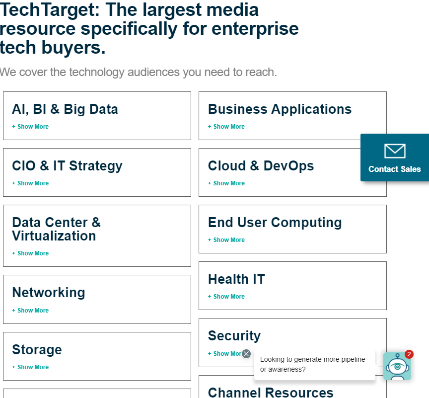

Internet Written Communication:
Ways people can communicate over the World Wide Web from different places in the world.Examples:
Emails, Text messages, Chat rooms, Forums, etc.Internet Voice communication:
Allows people to talk and hear each other on the World Wide Web from different places in the world.Examples:
Zoom and Teams.Information Search:
Allows people to find whatever they are searching for easily when people type what they are looking for on the internet.Examples:
Microsoft Edge, Google, Google Chrome, etc.File Downloading:
People can download files from one computer to another and can download files from another computer or a web site and mostly to help businesses, schoolwork and entertainment.Examples:
Downloading music, Downloading files from another business and downloading files needed for schoolwork.File Sharing:
The public or private sharing of computer data or space in a network with various levels of access privilege and providing access to digital media such as programs, electronic books, etc, usually from server to server or computer to computer.Example:
Techtarget.com.